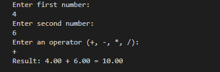
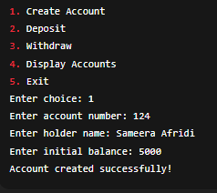
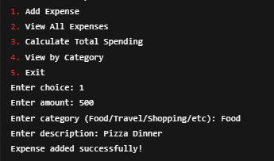
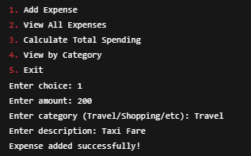
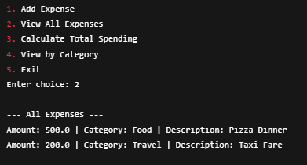
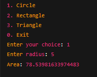
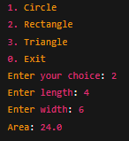
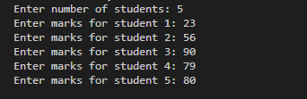
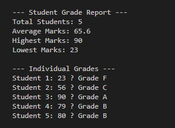

Introduction
Learning Java becomes easier when you combine theory with real projects. In this blog, I will walk you through 5 beginner-friendly Java console projects. Each project introduces important programming concepts such as variables, loops, arrays, and object-oriented programming. By the end, you’ll have a strong foundation in Java basics.
Day 1: Calculator
Concepts Covered:
- Variables
- Data Types
- Operators
- Conditional Statements (if-else, switch)
- Functions
- Loops
A simple calculator that performs basic arithmetic operations such as addition, subtraction, multiplication, and division.
Sample Output:
Day 2: Bank Account Management
Concepts Covered:
- Classes
- Objects
- Constructors
- Encapsulation
- Methods
- Switch-case
A console application to manage a bank account with operations like deposit, withdraw, and balance check.
Sample Output:
Day 3: Expense Tracker
Concepts Covered:
- ArrayList
- CRUD operations
- Loops
- Encapsulation
- Scanner
A program to record expenses, view all expenses, and delete entries. Demonstrates CRUD with ArrayList.
Sample Output:
  Day 4: Shape Area Calculator
Concepts Covered:
- Inheritance
- Method Overriding
- Polymorphism
- Switch-case
- Loops
Calculates the area of shapes (Circle, Rectangle, Triangle) using OOP principles like inheritance and polymorphism.
Sample Output:
 Day 5: Student Grade Analyzer
Concepts Covered:
- Arrays
- Loops
- Conditional Statements
- Statistics (average, highest, lowest)
Analyzes student grades by calculating averages, highest and lowest scores, and assigns grades (A, B, C, F).
Sample Output:
 Conclusion
These 5 projects provide a structured approach to learning Java basics. Starting with simple variables and operators, you gradually move towards OOP concepts such as classes, inheritance, and polymorphism. Completing these projects will help you strengthen your problem-solving skills and prepare you for advanced Java topics.